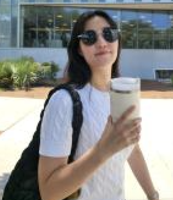
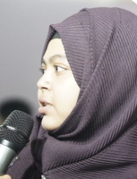
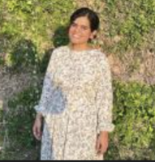

We study and design human-AI systems, developing technologies to improve communication for and with people with disabilities; enhance the accessibility of reading comprehension and data visualization; and advance the reporting and tracking of urban accessibility issues. Our work centers the experiences of people with disabilities (e.g., Deaf or Hard of Hearing individuals), as well as those connected to disability communities (e.g., hearing sign language users and public-sector organizations working with people with disabilities).
Short Bio. Saad Hassan is an Assistant Professor in the School of Science and Engineering at Tulane University. He directs the NOLA A11y lab and is affiliated with the Tulane Center for Community Engaged AI. His research spans Accessible Computing, Human-Computer Interaction (HCI), and Computational Social Science, with a focus on AI-driven technologies that support communication, learning, and creative expression for people with disabilities. Saad has published over 25 research articles in premier HCI and accessibility venues, including CHI, ASSETS, TACCESS, and MobileHCI, as well as leading AI venues such as CVPR, NeurIPS, and EMNLP. He has also received three Honorable Mention and Best Paper nominations at CHI and ASSETS. He earned his Ph.D. in Computing and Information Sciences from the Rochester Institute of Technology, where he was advised by Matt Huenerfauth, and was a recipient of the Duolingo Dissertation Award. He currently serves on the program committees for ASSETS and CHI.
News
📃 Two submissions to
Posters and Demonstration Track
for
ASSETS 2025
were accepted:
1. Sign language learning tool for emergency medical responders
Led by
Chaelin Kim
with undergraduates Cameron McLaren, Madhangi Krishnan, and Nikhil Modayur.
2. Automatic reading support tool for people with disabilities
Led by
Nazmun Nahar Khanom
with undergraduate Aaron Gershkovich and Oliver Alonzo(DePaul University).
📃 A submission on review of literature on reading support tools was accepted to the
Technical Paper Track
of
ASSETS 2025.
This work was done in collaboration with Oliver Alonzo (DePaul University).
📃 A paper on ASL fingerspelling data collected using mobile phones and a recognition baseline was accepted at
CVPR 2025.
This work was done in collaboration with the
Sign Language Understanding Group at Google Research
and the
Deaf Professional Arts Network
.
📃 A paper on a tactile haptic approach for affective caption was accepted at
CHI 2025
.
This work was led by
Calua Pataca
at
RIT CAIR Lab.
Selected Publications
Teaching
People
PhD Students ( mentoring plan)



Funding
Research at my lab is currently supported by:
Louisiana Board of Regents
Tulane: Lavin-Bernick Grant; University Senate Committee on Research (with the Provost's Office)
Previous sponsors:
Tulane: Center for Engaged Learning & Teaching (CELT)
Duolingo